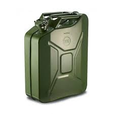

Soluções · Tratamento biológico
Tratamento biológico de efluentes orgânicos
Tecnologia enzimática para degradação de gorduras e matéria orgânica, reduzindo odores e melhorando a operação de sistemas com alta carga orgânica.
O desafio
Acúmulo de gorduras e matéria orgânica gera mau cheiro, entupimentos e necessidade recorrente de intervenções corretivas.
O uso indiscriminado de químicos pode comprometer o processo biológico e aumentar custo de operação.


Como a solução funciona
Uso de composto biológico enzimático para biodegradação controlada de gorduras, óleos e resíduos orgânicos, favorecendo conversão em subprodutos menos problemáticos.
O processo reduz a formação de crostas e obstruções, contribuindo para uma operação mais estável e com menor dependência de ações corretivas recorrentes.
Benefícios principais
Melhor controle orgânico com operação mais estável, menor odor e aplicação orientada conforme a necessidade do sistema.
Melhoria do desempenho do sistema ao longo do tempo
Menor dependência de químicos agressivos
Aplicação prática com orientação de dosagem
Produto relacionado
WF-17
Composto biológico enzimático para caixas de gordura, fossas e sistemas com carga orgânica.

Quer reduzir odores e entupimentos com solução biológica?
Solicite recomendação de dosagem e rotina conforme sua instalação.